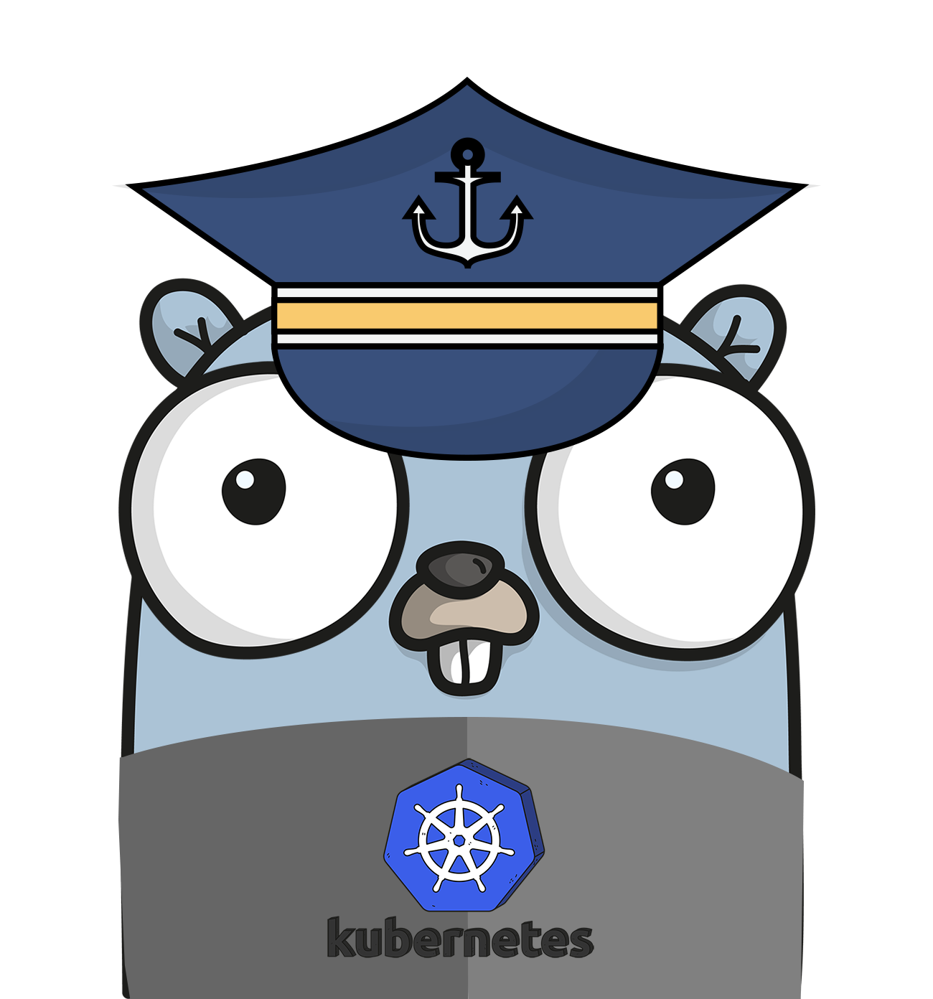

Kubernetes on Google Cloud
What's this
Welcome to Kubernetes on Google Cloud, the goal of this repo is to offer a collection of best practices and tutorrials for better use of GKE & Anthos products. Currently the content has been categorized for the following subjects:
- General
- Networking
- Storage
- Day 2 Operation
- CI/CD
- Tooling
Will include advanced topics in the future:
- Multi/Hybrid Clusters
- Solutions on GKE
- Workaround for something
Contributing
Encourage you to contribute to this repo if you have implemented a practice that has proven to solve something, just open an issue or a pull request to share with us, please.